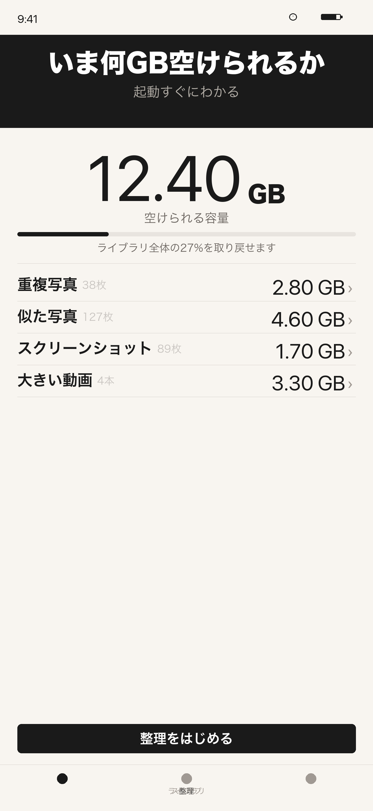
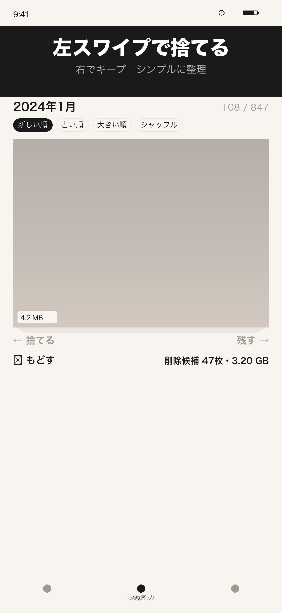
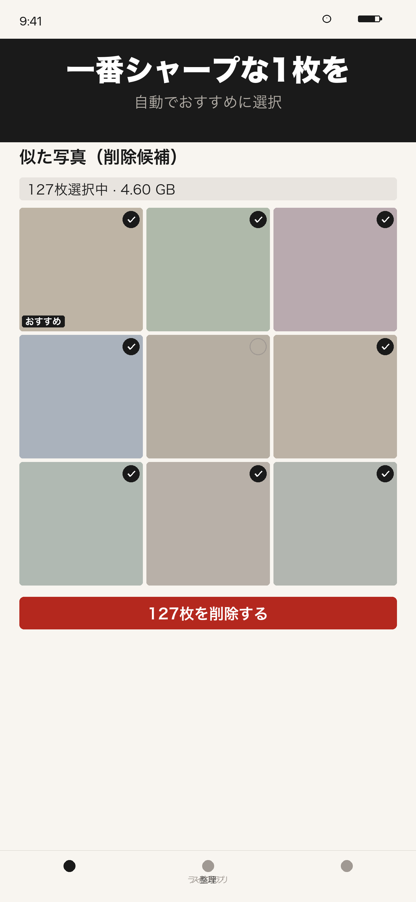
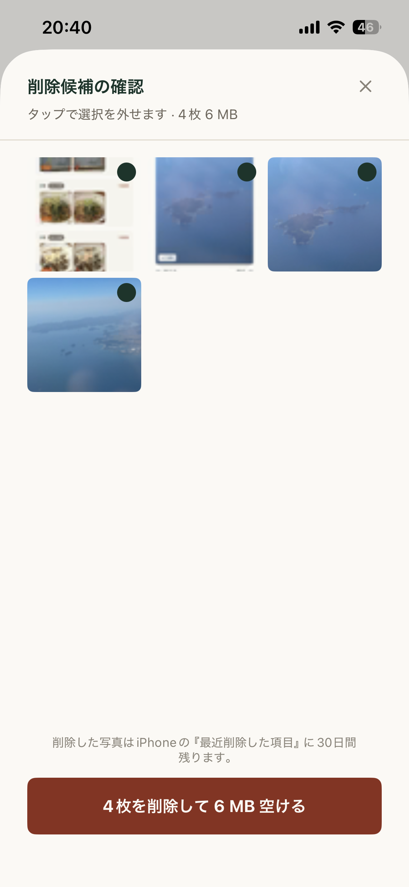
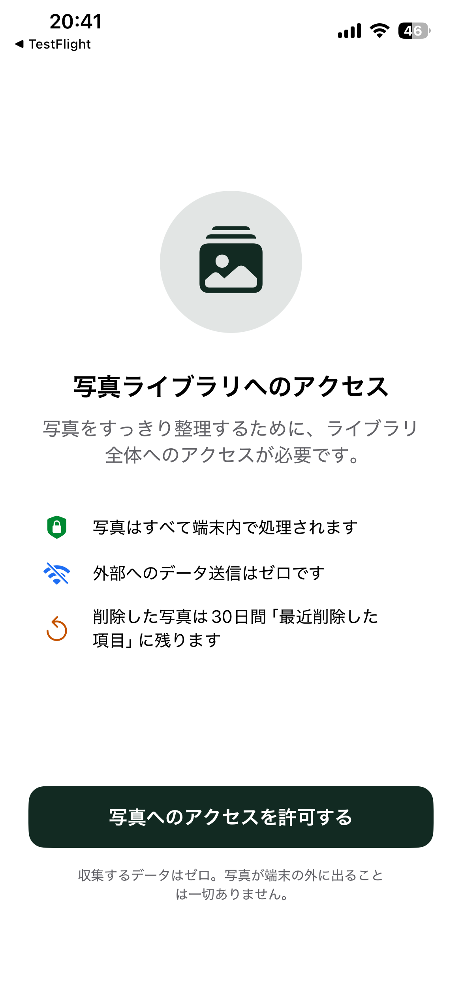

スクリーンショット Screenshots
アプリの画面 App Preview

空けられるGBを一目で See reclaimable GBs instantly

スワイプで直感的に整理 Swipe to keep or trash

類似写真を自動グループ化 Auto-group similar photos

削除前に1枚ずつ確認 Review before deleting

完全オンデバイス処理 100% on-device
機能 Features
主な機能 What You Can Do
容量の可視化Storage Dashboard
起動直後に「最大○○GB空けられます」と表示。カテゴリ別に内訳も確認できます。See exactly how many GBs you can reclaim on launch — broken down by category.
スワイプ整理Swipe to Organize
左スワイプで削除候補、右でキープ。ピンチで拡大して確認できます。Swipe left to delete, right to keep. Pinch to zoom and inspect before deciding.
重複・類似写真検出Duplicate & Similar Detection
完全一致の重複写真と、連写などの類似写真を自動グループ化。一番シャープな1枚を自動選択します。Finds exact duplicates and similar burst shots. Auto-selects the sharpest photo in each group.
スクリーンショット一括削除Bulk Screenshot Cleanup
スクリーンショットをまとめて一覧表示。読み終わったものをまとめて削除できます。Lists all screenshots at once. Delete the ones you no longer need in bulk.
進捗の自動保存Auto-Save Progress
中断してもやり直しゼロ。判定済みの写真は次回起動時にスキップされます。Pick up right where you left off. Reviewed photos are skipped on next launch.
完全オンデバイス処理100% On-Device Privacy
写真・動画・メタデータを外部に送信しません。ネットワーク通信ゼロ。No uploads. No cloud. No accounts. Zero network traffic.
使い方 How to Use
使い方ガイド Getting Started
-
写真ライブラリへのアクセスを許可するAllow Photo Library Access
アプリを初めて起動すると、写真へのアクセス許可を求めます。「すべての写真へのアクセスを許可」を選んでください。限定アクセスではこのアプリの機能をすべて使えません。On first launch, grant full photo library access. Limited access will restrict the app's functionality.
-
「整理」タブで容量を確認するCheck your storage in the Dashboard tab
起動直後に自動解析が始まります。完了すると「最大○○GB空けられます」と表示されます。重複・類似・スクリーンショット・大容量動画のカテゴリ別内訳も確認できます。Analysis starts automatically on launch. Once complete, you'll see how much storage you can reclaim, broken down by category.
-
カテゴリをタップして一括整理するTap a category to bulk-clean
「重複写真」「似た写真」などの行をタップすると、削除候補の一覧が表示されます。残したい写真のチェックを外してから「削除する」ボタンを押します。Tap any category row to see deletion candidates. Deselect photos you want to keep, then tap "Delete".
-
「スワイプ」タブで1枚ずつ判定するUse the Swipe tab to review one by one
左スワイプで削除候補、右スワイプでキープ。ピンチ or ダブルタップで拡大できます。判定はいつでも「↩ もどす」で取り消せます。Swipe left to mark for deletion, right to keep. Pinch or double-tap to zoom. Undo any decision with the "↩ Undo" button.
-
「確認へ進む」で一括削除するTap "Confirm" to bulk-delete
削除候補がたまったら「確認へ進む」をタップ。一覧で確認してからまとめて削除します。削除後30日間はiOSの「最近削除した項目」から復元できます。Once you've reviewed, tap "Confirm" to see all candidates and delete in one go. Files remain in iOS "Recently Deleted" for 30 days.
FAQ
よくある質問 Frequently Asked Questions
Q. 削除した写真は元に戻せますか？Q. Can I recover deleted photos?
はい。削除した写真はiOSの「最近削除した項目」アルバムに30日間保存されます。写真アプリ → アルバム → 最近削除した項目 から復元できます。30日を過ぎると完全に削除されます。Yes. Deleted photos stay in iOS "Recently Deleted" for 30 days. Go to Photos → Albums → Recently Deleted to recover them. After 30 days, they are permanently removed.
Q. 容量がすぐに減らないのはなぜですか？Q. Why hasn't my storage freed up yet?
削除した写真は「最近削除した項目」に30日間残るため、その間は容量が完全には解放されません。すぐに空き容量を増やしたい場合は、写真アプリの「最近削除した項目」を手動で空にしてください。Deleted photos remain in "Recently Deleted" for 30 days, so storage isn't freed immediately. To free space right away, manually empty "Recently Deleted" in the Photos app.
Q. iCloud写真がオンの場合も使えますか？Q. Does it work with iCloud Photos enabled?
使えます。ただし、iCloudに最適化されていて端末に原本がない写真は、ダウンロードせずにサムネイルで表示されます。削除操作はiCloud上の写真にも反映されます。Yes. Photos stored in iCloud (not downloaded locally) are shown as thumbnails without downloading the originals. Deletions also remove the photo from iCloud.
Q. 写真データは外部に送られますか？Q. Is my photo data sent anywhere?
いいえ。すべての解析・判定処理は端末内で完結します。写真・動画・メタデータを外部サーバーに送信することは一切ありません。ネットワーク通信はゼロです。No. All analysis happens entirely on your device. No photos, videos, or metadata are ever sent to any server. Zero network traffic.
Q. 途中で止めても大丈夫ですか？Q. What if I quit the app mid-session?
大丈夫です。スワイプ整理の判定履歴は自動保存されます。次回起動時に判定済みの写真はスキップされ、続きから再開できます。No problem. Your review progress is saved automatically. Next time you open the app, already-reviewed photos are skipped and you continue from where you left off.
Q. 「限定アクセス」を選んでしまいましたQ. I accidentally selected "Limited Access"
設定アプリ → スッキリGB → 写真 → 「すべての写真」を選んでください。ライブラリ全体への完全アクセスがないとこのアプリの機能をすべて利用できません。Go to Settings → PhotoSlim → Photos → select "All Photos". Full library access is required for the app to function correctly.
お問い合わせ Contact
サポートへのお問い合わせ Get in Touch
バグ報告・機能リクエスト・その他のご質問はメールでお気軽にどうぞ。Bug reports, feature requests, and general questions are welcome via email.
メールで問い合わせる Send an Email